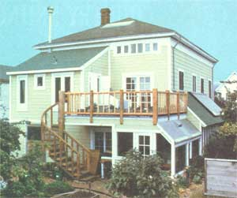
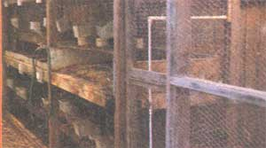
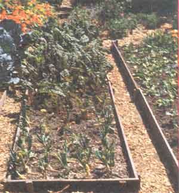

STAFF PHOTOS (HOUSE PHOTO COURTESY OF FARALLONES INSTITUTED)
Excerpted by permission from The Integral Urban House by the Farallones Institute, copyright © 1979 by Sierra Club Books. Available in large paperback for $12.95 from any good bookstore, or for $12.95 plus 95 cents shipping and handling from Mother's Bookshelf, P.O. Box 70, Hendersonville. North Carolina 28739.
The Farallones Institute in Berkeley, California is a non-profit educational and research organization-founded in 1969-that has become a leader in showing urban residents how to become more self-reliant. The Institute's "Integral Urban House" project began in 1974 with the purchase and subsequent renovation of a large old Victorian house on a 1/8-acre city lot in Berkeley. It has since become a model for a more ecologically sound urban habitat ... a home "that helps to support its residents while they support it". MOTHER first reported on the project in issue No. 42, page 125.
The just-published book from which the following excerpts have been taken is crammed full of charts, diagrams, plans, and all the essential how-to information gathered over four years of living with-and refining-the systems of the Integral Urban House.
In an integral house, each major functional system employs multiple pathways for material and energy flow. The heating system, for example, includes direct solar gain through windows, a solar air space heating system, and a wood stove space heater for cloudy, cold days. Organic wastes can be shunted in a variety of ways. Human fecal matter decomposes in the Clivus Multrum and, when fully decomposed, is used as a soil amendment on ornamentals. Urine is diluted and used as a nitrogen-rich fertilizer. Kitchen scraps are fed to the chickens where they are converted into edible protein and eggs, and the chicken manure is recycled in the garden. Garbage can also be composted or fed to worm cultures, which make a nutrient-rich casting for garden use . . . the worms themselves are fed to the chickens or the fish in the pond. Duckweed in the pond absorbs toxic fish waste and in turn can be dried and fed to the chickens.
These are only several examples of the principle of multiple pathways, which is closely linked to the diversity and stability associated with natural healthy systems. Multiple pathways constitute an interactive process within any food or nutrient chain. For example, a diversity of types of plants in a garden insures a diversity of insect life. This condition in turn insures that no particular insect is likely to get out of control and become a pest. Diverse plant and insect life attracts birds, and other natural predators on the food chain, that help to maintain balance. Another feature of the multiple pathway is that each component of the system tends to perform overlapping functions. One test of the integral quality of any system is the extent to which components are integrated into multiple functions.
Consider our earlier example. An electric heater can only be an electric heater, and a garbage truck can only be a garbage truck. However, a window admits light, provides a view, may be a place to sit, and can also be a solar collector. An attached greenhouse can be a solar collector and storage system, a place to grow seedlings and winter vegetables, the location for a hot tub. A garden or planting boxes, however small-together with a composting bucket-take the place of the smelly garbage can and the noisy garbage truck . . . and, besides processing waste nutrients, provide a source of beauty, food, and flowers and can be the focus of many pleasurable leisure hours.
Urban dwellers tend to become insensitive to the microclimate variations of their habitat in a way that farmers can never afford to do. When you begin to raise some of your own plants, particularly when these plants are to produce food that will sustain you, you become aware of your outdoor living spaces in a new way. How the sunlight and shade move and the winds blow are once again significant. Small, warm, protected areas are cherished. It becomes a challenge to make productive use of cool, shady, or otherwise "waste" spaces. Compost bins and dry-leaf storage areas may fit with the rabbits on the north side. A mat for sunbathing can share a wind-break in the corner of a sunny balcony with containers of tomatoes. Because of the small scale involved, you will discover a great many ingenious methods for modifying temperature, humidity, and wind that would require far too much labor and too many materials for the farmer.
With the physical variables of light, space, and climate attended to, the more subjective considerations must come into play as one plans a food-raising program. A key element is time, one of the most limiting constraints for an urban person.
One of the ideas behind the integral urban house is that food production, organic-waste management, and energy and resource conservation are all easier, less time-consuming, and more attractive than in a traditional home where these systems are not designed into the flow of daily life. Since we are assuming that the residents will be following more or less urban lifestyles, it is taken for granted that they will be earning all or the major portion of their cash income outside the home. The challenge of incorporating some home-scale food production into the normal work schedule is one we think can be met by overall design and planning of the systems and the adoption or invention of time-saving techniques.
A great time-saver in the garden is the planting of seedlings rather than seeds outdoors. Traditionally, certain vegetables have been considered difficult to transplant: beans, carrots, beets, and peas, for example. However, if these vegetables are raised indoors in containers open at both ends, the transplanting shock will be minimal, since the roots hardly need be disturbed at all. We have successfully transplanted all the common garden vegetables after raising them indoors in the manner recommended. However, some plants, such as corn and carrots, are best started outdoors simply because of the numbers of plants that are normally used. Seeds that are planted in the ground directly can be soaked overnight first to speed germination. If the seeds are tiny, as with carrots, they may be mixed with sand for easy, even sowing.
Another important time-saver is keeping the ground covered with a thick mulch of organic materials to whatever extent you can. Mulch keeps down weeds and, by maintaining a friable ground surface, makes it easy to pull out those that might get a root hold. Mulch can be of many materials, both organic and inorganic. Best are those that will gradually decompose and provide plant nutrients . . . hay and straw (although these may have much grass seed in them), dried leaves, and-most important-compost.
Sawdust makes an excellent mulch in pathways where no plant growth is desired. Because of its high carbon content, nitrogen will be taken from the top inches of the soil by the decomposer organisms where sawdust is placed, retarding weed growth . . . thus the sawdust acts as a natural herbicide. However, sawdust should not be used as a mulch on the beds close to the shallow-rooted plants unless it has been composted first, because there the decomposer bacteria will rob the plants of the nitrogen they need.
When summer irrigation is necessary, designing your system to reduce hand watering is another important time-saving strategy. Where overhead watering is preferred, this can be handled by setting up sprinklers on timers to cover the entire area-at regular intervals-for the period necessary to deliver the amount of water needed. Plants in containers can be linked up to a drip-watering system, which also can be attached to a timer and fully automated, saving both time and water.
Another time-saver for mild-winter areas is letting certain vegetables seed themselves in. The many seedlings that pop up in the spring can then be thinned out as if they were weeds. At the Berkeley house we have done this with nonhybrid carrots, parsley, coriander, upland cress, New Zealand spinach, chard, onions, fava, beans, and leeks. The seeds blow about (lettuce), or the plant topples over (chard, leeks), and eventually seedlings emerge wherever the seeds landed on the mulch. These can then be transplanted or used for food to thin them out. "Nonhybrid" is stressed here because hybrid plants produce seeds with the various characteristics of their mixed parentage, and thus may not result in the kind of plant you desire.
A caution about methods that save time: You may find that environmentally safe techniques take more time than those in vogue in the larger society. Managing wildlife by nonpesticide means is a perfect example. One of the appeals of pesticides is that they appear, at least at first, to take care of things quickly. Any method substituted will probably take more time and attention in the short run. Eventually, however, by establishing a better balance of natural controls in the garden, nonpesticide methods may reduce the overall time that needs to be spent in pest management.
At the integral urban house there are several pathways for the utilization of waste products. The organic leftovers from growing, preparing, and consuming human food may go into the waterless toilet to provide additional carbonaceous material, as well as promote superior aeration, for the process of decomposing the human fecal wastes. Or, it may be stored in sawdust or crushed dry leaves until it is combined with other materials in a batch in the compost bins. In either case the end product, compost, ultimately goes to the garden. Here food is raised, not only for human consumption but for small stock-chickens and rabbits-as well. However, where there is a choice, kitchen and garden scraps are a better source of animal feed, since this pathway conserves more energy and nitrogen. Where chickens are on the ground or raised in wire cages above the ground, organic kitchen wastes may be fed to them directly, and garden wastes (weeds, tough outer portions of garden vegetables, prunings from ornamental plants) may be fed to the rabbits. Additional food from commercial sources is imported: alfalfa for the rabbits and grains for the chickens. Insects, principally flies, may be trapped or raised on wastes and also fed to the chickens. The manure from the animals is then used in the compost, which helps to grow the plants or, in the case of rabbit manure, may go directly to the soil around the plants as a fine, well-balanced fertilizer.
The principal reasons for raising small stock are to obtain high-quality protein for human consumption in the form of meat and eggs, and manure to use in composting and ultimately in the garden as fertilizer, as well as for pleasure or recreation. Additional benefits are obtaining rabbit pelts or wool (the latter from the Angora breed), and the satisfaction of knowing that the meat you eat is relatively free of the pesticides and hormones frequently used in commercial livestock production.
Under some circumstances, the cost of producing these products compares favorably with their prices in the store. In any case, both chickens and rabbits-but chickens particularly-can recycle the family organic waste effectively.
A common response of many novices to the art of small-stock raising is, "But they're so cute, I could never bear to kill them.” Perhaps. We refer to this as the "Bambi syndrome". It results from the fact that urban children grow up unaware of what it takes for life to survive:
They are exposed to countless sentimental stories of anthropomorphized, "cute" little animals, and their limited experience leads them to believe that meat and eggs originate in the store in sanitary-looking plastic containers.
In fact, through a simple demonstration of how quick, painless, and aesthetically acceptable the butchering of these animals is when done properly, we have, between us, taught hundreds of meat-eating people to do an adequate job of it and find satisfaction in accomplishing the task. Our feeling is that, if you do eat meat, confronting directly the fact that someone must butcher it might be desirable. Rather than confining someone to a slaughterhouse for eight hours a day as an occupation, you might better handle the job yourself.
Both chickens and rabbits need an area that can be protected from dogs, teasing children, rain, winter winds and snow, and the heat of the summer sun. They must be located where the cackles of chickens or an occasional whiff of rabbit urine will not send the neighbors to telephone the police. Some cities have ordinances specifying the distance animals must be from the property line, others will not permit more than a specified number of certain animals, and a few forbid the raising of stock altogether. In any case, the unwritten law seems to be: Don't annoy the neighbors.
Most municipal ordinances restricting livestock were made to protect urbanites from the smell, noise, flies, and general nuisance-causing behavior associated with farm animals that are managed in the city as if they were still on the farm. Systems must be constructed that allow small livestock to be raised compatibly with urban sensibilities. This requires some special technology . . . but first, adequate space must be made available for the job.
The amount of time the various animal systems will take depends on several factors: how large or small the systems are, how well-designed and automated you make them, how experienced you are in working with the animals, and how leisurely or efficiently you approach the process. Naturally, putting the system together will take more time than managing it when it is running . . . and the more you learn, the easier and quicker it becomes.
At the Integral Urban House in Berkeley, we have found that rabbit management takes approximately two hours per week. That includes feeding, slaughtering, and general husbandry, but not tanning the pelts or playing with the young. Cleaning the manure out is part of the composting process. The chicken system takes approximately one hour per week. One should add to this any extra time spent in the garden to raise alfalfa for the rabbits or trap flies for the chickens.
Homesite-derived feed will affect both the amount of time and the cost of these systems. Of course, providing alternative feed resources will increase the amount of time you spend dealing with the system, but it is likely to decrease the cost. In general, if the animals are fed solely on commercial feed rations without any supplement, their meat or eggs probably won't be any less expensive than products purchased in the market, though of course you will still have the manure for fertilizer in the garden as a bonus. The more alternative feeds you can raise, trap, or scrounge, the cheaper the system.
Aquaculture has considerable theoretical appeal for those planning to implement the integral house concept. However. actually making a backyard system productive requires extensive knowledge of the biology and behavior of the species raised as well as the artful use of ecological principles in the design of the system. There is no valid cookbook formula for an aquacultural system that will work anywhere. One must always begin by carefully considering the local conditions, designing a system that has the possibility of meeting one's needs, and choosing species that fit that system and each other.
One way to increase the efficiency of backyard fishponds is by using the notion of polyculture skillfully: that is, simulating the development of a natural aquatic community by choosing species whose feeding modes and preferences differ in ways that are complementary. Better use is thus made of food inputs to the pond and, because less food is left over to promote the growth of bacteria and fungi, water quality is improved. At the experimental backyard pond at the Integral Urban House, we have found several species combinations which appear to work in this way. For example, in the cooler seasons we raise Pacifastacus crayfish together with rainbow trout. The trout are voracious omnivores that feed at all levels in the water, and the crayfish are bottom scavengers and detritivores. Both species have the same preferred temperature range. The crayfish eat whatever food is missed by the trout as well as coarse plant material that the trout do not eat, and they also consume the trout excrement, which would otherwise accumulate on the bottom. As detritivores, they live in large part on bacteria growing on decayed matter. Both trout and crayfish grow rapidly under these conditions, and water quality is much better than if the trout are raised alone.
If you are determined to raise fish in your urban back yard, some degree of intensiveness will be required to increase per area productivity to the point where it can make a significant contribution to the family's diet. The rewards are likely to be educational, symbolic, and gustatory rather than economic. However, if water from the pond is used in the garden, the fertilizer equivalent of the nutrients supplied should be considered as an additional benefit. Since it will probably cost at least $100 to construct a 100-square-foot pond and several hundred dollars more to build a pump and filter system, the initial costs are high . . . and if you can produce more than 25 pounds of fish a year from such a pond, you will be in the forefront of America's backyard aquaculture innovators.
By the use of technological means of aeration, waste removal, and temperature control it is possible to reach truly phenomenal productivities, exceeding a pound of fish per cubic foot of water per year . . . but these techniques are extremely energy-intensive, and the cost of electricity keeps going up.
It is probably the course of wisdom for the backyard aquaculturalist to use artificial supports only to promote growth, not to sustain life. This means settling for a moderate degree of intensity and a moderate level of production. Wind- or solar-powered support systems are adequate for this level of intensity. Fish under conditions too severe to allow growth may survive for extended periods of time if they are not too crowded. In such intermittent situations a pond will fluctuate between maintenance and growth.
The aquaculture system in the southwest corner of the Integral Urban House garden employs a unique device, called the Savonius Rotor, to prevent our pond from becoming stagnant and eutrophic. The rotor takes its name from J. Savonius, a Finnish engineer who studied the aerodynamic properties of S-shaped vertical (upright) axis turbines. [EDITOR'S NOTE: See MOTHER NO. 26, page 78 and No. 27, page 39.]
The Savonius can catch winds from any direction, and a gust of seven to eight miles per hour will start the machine moving. With linkage improvised from scrap metal and spare parts, we converted the rotational force to vertical strokes which activate a homemade diaphragm pump submerged in the pond.
The pump raises water to a biological filtration unit which is housed in a steel drum, the top of which is five feet above the surface of the water. Primary filtration of large particles is achieved by a felt bag located on top of the drum, and secondary filtration consists of a bed of crushed oyster shells that fills the drum. The toxic ammonia and growth-inhibiting hormones excreted by the fish are removed by bacteria lodged in the oyster shell bed of the filter. Filtered water passes through a faucet aerator to restore oxygen to the pond to complete the cycle.
We have estimated that in a 15-mile-per-hour wind, the Savonius can cycle 1.5 gallons of water per minute through the filter. Though seemingly not a great amount of pumping power, eight hours of pumping will circulate nearly 750 gallons of water, or one-third of the pond's volume, which is our optimum design consideration.
Beekeeping is one of those hobbies that can be self-supporting, at least to the degree that the household consumes home-produced honey instead of granulated cane or beet sugar bought at the store. Keeping hives in some metropolitan regions can be even more productive than in some rural locations . . . because city people often maintain ornamental plants that bloom more frequently than farm crops, and thus provide nectar and pollen for a larger portion of the year.
The great importance of bees in pollinating crops is rarely understood by city dwellers, whose primary reaction to these insects is often fear of being stung. A number of cities have restrictive ordinances against beekeeping primarily to protect citizens from being stung. But the fact is, less than 1% of the population has an allergic reaction to insect stings. For people who do have extreme reactions, the best policy to follow is individual desensitization, a successful procedure available through allergy clinics and doctors who specialize in treating allergies. For the vast majority of people, the likelihood of being stung is slight, and the fear of the possibility is all out of proportion to the consequences.
In spite of occasional prohibitory ordinances, many people do keep bees in urban and suburban areas. These beekeepers quickly learn to make their hives inconspicuous by keeping them hidden or painting them unobtrusive colors. Gifts of honey or beeswax candles may help to make neighbors friendly, as gifts of fresh eggs may do in regard to raising chickens. When a town near us reviewed its laws prohibiting beekeeping recently, some 30 residents who were already keeping hives appeared before the city council and had all the legal constraints repealed.
At the Berkeley Integral Urban House, preliminary experiments showed that fish would eat dead bees. To make this fact useful, a beehive was mounted over a pond so that when bees died they fell into the water and thus became a supplementary protein source for the animals within. This arrangement takes advantage of the normal process of bees dying. A strong hive of sixty thousand bees will have an average daily mortality rate of 1.5 percent during the periods of peak activity. This means that as many as a thousand bees per day can die in heavy honey-flow periods in the spring. This bee-fish combination exemplifies the integration principle by which systems that may be net losers from an energy, labor, or economic point of view can-when combined-provide a net gain.
Yakima, Washington's Art Blinick and Kay LaRoux know how to steam vegetables and get soup stock at the same time. They throw their veggie scraps in the water under the steamer!
|
 The Integral Urban House's attached greenhouse only hints at the innovations inside! |
 Chicken and rabbit cages take up little of a ""citysteader's"" precious room. |
 Vegetables, too, can be raised with space-saving ""intensity"". |